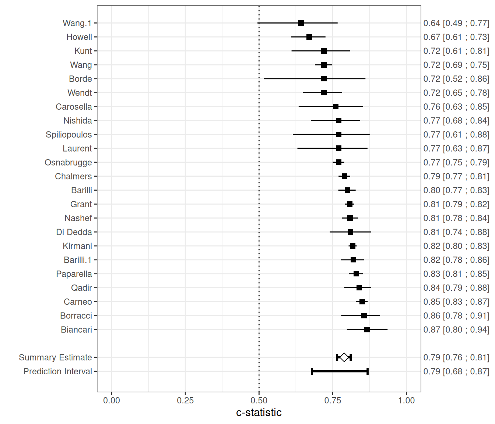

Meta-analysis of prediction model performance
Last Updated on 23 September, 2025
Source:vignettes/ma-pm.qmd
1 Introduction
The EuroSCORE II is a commonly used scoring rule for estimating the risk of in-hospital mortality in patients undergoing major cardiac surgery. It was developed using data from 16,828 adult patients from 43 countries. Predictors include patient characteristics (e.g. age, gender), cardiac related factors (e.g. recent MI) and surgery related factors (e.g. Surgery on thoracic aorta). In 2014, a systematic review was undertaken by Guida et al. (2014) to search articles assessing the performance of EuroSCORE II on perioperative mortality in cardiac surgery. The systematic review identified 24 eligible validation studies, 22 studies were included in the main analysis.
In this case study, we summarize the results from these 22 studies, as well as the results from the split-sample validation contained within original development article of EuroSCORE II. We will use the metamisc package to derive summary estimates for the discrimination and calibration performance of EuroSCORE II, to evaluate the presence of between-study heterogeneity, and to identify potential sources of between-study heterogeneity. A step-by-step tutorial is provided by Debray et al. (2017).
We can load the data from all 23 validation studies as follows:
2 Meta-analysis of discrimination performance
This section summarizes the discrimination performance of the EuroSCORE II prediction model when externally validated in patients undergoing coronary artery bypass grafting (CABG). The data are based on 23 validation studies identified in a systematic review, with model performance assessed using the concordance index (c-index). These studies vary considerably in size and event rates, reflecting diverse clinical settings and populations. The table below presents the reported c-indices with corresponding confidence intervals (and standard errors where available), alongside the number of events and total sample size per study.
| Study | Events / Patients | C-index (SE, 95% CI) |
|---|---|---|
| Nashef | 232 / 5553 | 0.809 (95% CI: 0.782; 0.836) |
| Biancari | 28 / 1027 | 0.867 (95% CI: 0.798; 0.936) |
| Di Dedda | 41 / 1090 | 0.810 (95% CI: 0.740; 0.880) |
| Chalmers | 191 / 5576 | 0.790 (SE = 0.010) |
| Grant | 746 / 23740 | 0.808 (SE = 0.008) |
| Carneo | 215 / 3798 | 0.850 (SE = 0.010) |
| Kunt | 34 / 428 | 0.720 (SE = 0.051) |
| Kirmani | 547 / 15497 | 0.818 (SE = 0.007) |
| Howell | 90 / 933 | 0.670 |
| Wang | 226 / 11170 | 0.720 (SE = 0.015) |
| Borde | 8 / 498 | 0.720 |
| Qadir | 76 / 2004 | 0.840 |
| Spiliopoulos | 14 / 216 | 0.770 (SE = 0.067) |
| Wendt | 45 / 1066 | 0.720 (SE = 0.034) |
| Laurent | 18 / 314 | 0.770 (SE = 0.061) |
| Wang | 13 / 818 | 0.642 (SE = 0.071) |
| Nishida | 33 / 461 | 0.770 |
| Barilli | 210 / 12201 | 0.800 (SE = 0.015) |
| Barilli | 125 / 1670 | 0.820 (SE = 0.020) |
| Paparella | 300 / 6191 | 0.830 (SE = 0.012) |
| Carosella | 9 / 250 | 0.760 (SE = 0.056) |
| Borracci | 21 / 503 | 0.856 (SE = 0.033) |
| Osnabrugge | 1071 / 50588 | 0.770 (SE = 0.010) |
To summarize the c-index across external validation studies, we use the valmeta() function. This function automatically derives the logit-transformed c-statistics and their standard errors based on the reported values. When the standard error is not directly available, it is reconstructed using available study-level information (e.g., number of events and non-events).
The meta-analysis is performed on the logit-c scale, which helps stabilize the variance and supports the assumptions of normality. valmeta() then applies a random-effects model using restricted maximum likelihood (REML) estimation and constructs Hartung-Knapp-Sidik-Jonkman (HKSJ) adjusted confidence intervals to account for between-study heterogeneity.
valmeta(cstat = c.index, cstat.se = se.c.index, cstat.cilb = c.index.95CIl, cstat.ciub = c.index.95CIu,
N = n, O = n.events, method = "REML", test = "knha", slab = Study, data = EuroSCORE)Summary c-statistic with 95% confidence and (approximate) 95% prediction interval:
Estimate CIl CIu PIl PIu
0.7888603 0.7648784 0.8110005 0.6792568 0.8682736
Number of studies included: 23The summary estimate of the average logit-C statistic was 1.318 (95% CI: 1.180 to 1.457), which corresponds to a summary c-statistic of 1/(1 + exp(-1.318)) = 0.79. There was substantial heterogeneity ( = 0.070 with SE = 0.029, on the logit-C scale), reflected by a 95% prediction interval of 0.68 to 0.87 for the true c-statistic in a new study, which suggests a wide range of potential discrimination performance across settings.
The figure below provides a forest plot summarizing the estimated c-statistics across external validation studies.

We can also adopt a Bayesian random-effects model to summarize the c-statistic. In the example below, we specify a weakly informative prior distribution for the between-study heterogeneity, with . Additionally, we define a minimum clinically meaningful C-statistic, set here at 0.7, and estimate the posterior probability that the C-statistic in a new study exceeds this threshold, using the argument min.cstat = 0.7:
valmeta(cstat = c.index, cstat.se = se.c.index, cstat.cilb = c.index.95CIl, cstat.ciub = c.index.95CIu,
N = n, O = n.events, method = "BAYES", pars = list(hp.tau.dist = "dunif", hp.tau.min = 0,
hp.tau.max = 2, min.cstat = 0.7 # minimum acceptable value
), slab = Study,
data = EuroSCORE)Note: Unable to calculate the multivariate psrf
Finished running the simulationSummary c-statistic with 95% credibility and 95% prediction interval:
Estimate CIl CIu PIl PIu
0.7884763 0.7636427 0.8112977 0.6832369 0.8802824
Posterior Pr(c-stat > 0.70): 0.943
Number of studies included: 233 Meta-analysis of calibration performance
Calibration refers to a model’s accuracy of predicted risk probabilities, and indicates the extent to which expected outcomes (predicted from the model) and observed outcomes agree. Summarising estimates of calibration performance is challenging because calibration plots are most often not presented, and because studies tend to report different types of summary statistics in calibration. For example, in the case study, calibration was assessed using the Hosmer-Lemeshow test, calibration plots or by comparing the observed mortality to the predicted EuroSCORE II (either overall or for groups of patients). Within each validation study, we can compare the total number of observed events (O) with the total number of expected (predicted) events by deriving their ratio O:E. The total O:E ratio provides a rough indication of the overall model calibration (across the entire range of predicted risks). It describes whether more (O:E > 1) or fewer (O:E < 1) events occurred than expected based on the model. Whilst the O:E ratio itself was not explicitly reported in all studies, it can be calculated from other reported information:
EuroSCORE <- EuroSCORE %>%
mutate(oe = n.events/e.events)The O:E ratio can also be derived from the observed and predicted mortality risk Po and, respectively, Pe:
EuroSCORE %>%
select(Po, Pe) %>%
mutate(oe = Po/Pe)It is recommended to first transform extracted O:E ratios to the log (natural logarithm) scale before applying a meta-analysis.
EuroSCORE <- EuroSCORE %>%
mutate(logoe = log(oe))